地城迴響 · 技能演出第四版
你同意技能可以例外使用真正的光源。做之前先量了一件事， 結果那件事直接決定了整個做法——照一般寫法加的光，在 iPhone 上會被引擎丟掉大半。
這個專案用的是 Built-in 管線，而 Built-in 的每個物件同時只有
pixelLightCount 盞逐像素光，超出的會被默默降級成逐頂點——
不會報錯，只是看起來沒效果。專案設定裡 iPhone 的預設品質等級是 Medium，
而 Medium 的 pixelLightCount 是 1，那一盞早就被玩家的火把佔滿了。
所以我先放一盞測試光，量畫面平均亮度「開 vs 關」差多少（開關交錯取樣六輪，抵銷火把自己的閃爍）：
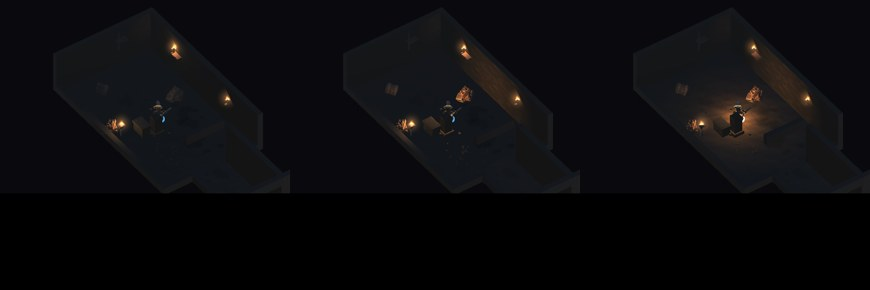
| 寫法 | 畫面平均亮度增量 |
|---|---|
renderMode = Auto（一般寫法） | +0.50 |
renderMode = ForcePixel | +1.60 |
| Auto ＋ 全域 pixelLightCount 拉到 4 | +1.74 |
結論：技能光一律標成 ForcePixel。 另一條路是全域把 pixelLightCount 拉高，但那會讓場上十幾盞火把全部變成逐像素 （手機上很貴），而且會連帶把整座地城照亮——正好是你交代不要做的事。 所以只有技能是例外，其他一切照舊。
你說「不是所有技能都需要，你自己判斷」，並舉了「烈焰該亮、劇毒融化可能不需要」。 我照同一個標準把每一個判了一次，刻意不給的比給的更需要理由：
給光：燃燒（火本來就是光源，也正是你兩度回報看不出來的那一個）、 麻痺（做成爆閃而非常亮，電的特徵是不連續）、戰吼、血怒、冰霜新星、閃現、 衝鋒撞擊、奧術飛彈命中、灰燼僕從、石膚成形的那一瞬間。
不給光：
· 劇毒融化——你自己舉的例子，我同意。
· 冰凍——冰不發光。藍色本體染色已經足以一眼分辨，硬加冷光只會變成
「會發光的藍色雕像」，讀起來更不像結冰。
· 旋風斬——持續技，常亮會把整個房間洗白。
· 石膚的持續期間——只給成形那一下。給持續光等於「石膚順便當照明」，
既不合理，也會侵蝕摸黑探索。
你提的三個條件我分開量，因為它們會互相打架——把光放大到能撼動整張畫面的平均亮度， 正好就是「把整體環境照亮」。所以局部要夠亮、全域要夠小：
| 技能 | 局部基準 | 局部增量 | 比原本亮 | 全域峰值 | 全域持續 | 結束後殘留 | 到期殘燈 |
|---|---|---|---|---|---|---|---|
| 燃燒(敵人) | 24.12 | +5.99 | 24.8% | +0.63 | +0.47 | -0.11 | 0 |
| 麻痺(敵人) | 24.01 | +4.98 | 20.7% | +0.57 | +0.09 | 0.00 | 0 |
| 戰吼 | 23.47 | +45.81 | 195.2% | +7.48 | +2.12 | +0.03 | 0 |
| 血怒 | 23.17 | +9.25 | 39.9% | +1.06 | +0.19 | -0.01 | 0 |
| 冰霜新星 | 22.93 | +38.61 | 168.4% | +6.08 | +1.51 | -0.06 | 0 |
| 閃現 | 22.97 | +10.84 | 47.2% | +2.37 | +1.02 | +0.22 | 0 |
| 石膚 | 22.85 | +6.82 | 29.8% | +0.66 | +0.02 | -0.11 | 0 |
| 衝鋒 | 24.40 | +21.97 | 90.0% | +2.73 | +0.64 | -1.02 | 0 |
| 奧術飛彈 | 24.49 | +8.08 | 33.0% | +0.91 | +0.25 | -0.07 | 0 |
| 灰燼僕從 | 23.34 | +5.70 | 24.4% | +0.69 | +0.56 | -0.10 | 0 |
局部 = 效果位置周圍 88×88 的視窗。全域峰值不設限——爆發技那半秒就是要亮， 你也明說發動當下沒問題；真正守門的是「全域持續」（整段期間的平均，上限 3.0） 與「結束後殘留」（上限 +0.35）。衝鋒的 −1.02 是負的：它把敵人擊退了 1.2 公尺， 固定視窗裡已經沒有敵人——場景變了，不是燈沒收。漏光只會讓畫面變亮，不會變暗。
「到期殘燈」這一欄是這次特別補的。第一版的檢查是先呼叫「全部清掉」再量， 那等於拿測試自己的動作去證明產品沒問題——遊戲跑的時候根本不會在半局中間呼叫它。 改成先量自然到期後還剩幾盞，再做清除。十項全部是 0。
另外三道防線都在：每盞燈自己有壽命、跟隨目標消失就跟著銷毀、換樓層／回 Hub／ 重新開局整批清空。build 31 那次就是一盞沒釋放的燈把整座地城照亮， 所以這裡不敢只靠一道。
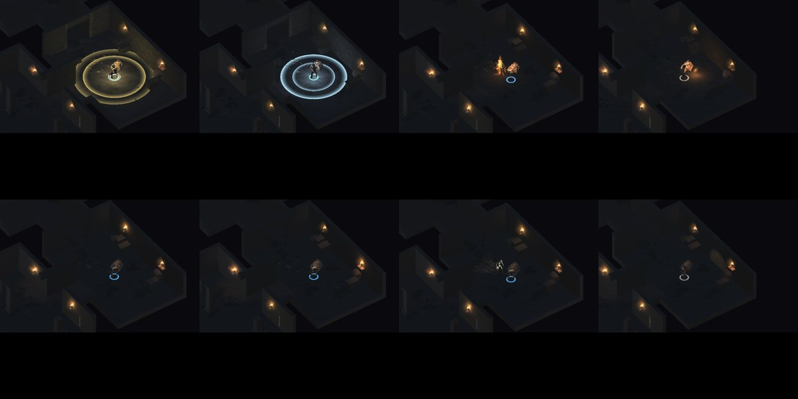
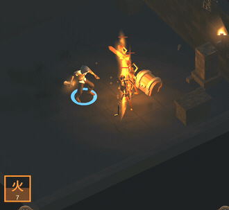
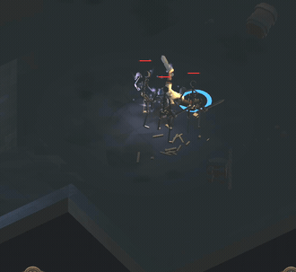
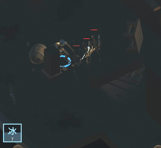
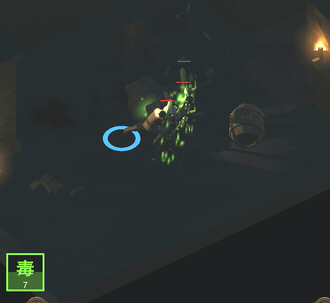
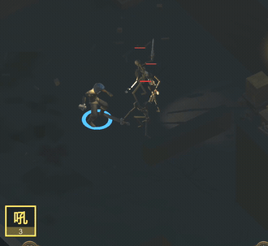
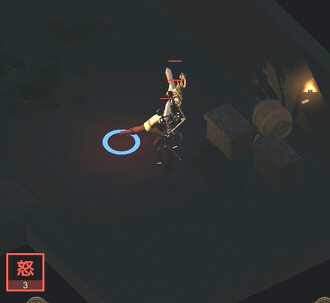
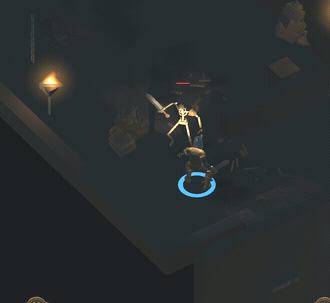
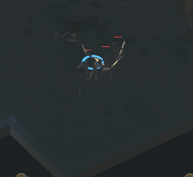
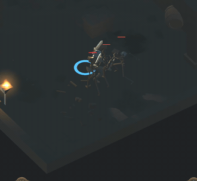
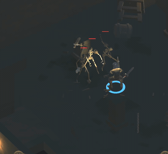
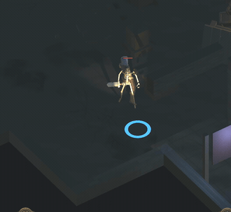
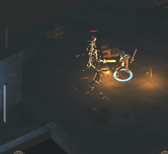
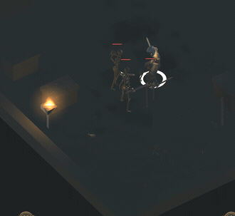
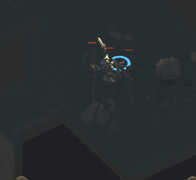
火球（法師普攻）本來就掛了一盞 Light，但它是一般寫法， 所以在實機上同樣被降級、亮度大半是浪費的。 把它改成 ForcePixel 會讓它明顯變亮——但那是普攻，會一直放， 改了等於改動整場的基礎亮度與效能，已經超出「技能特效」的範圍。 所以這次沒有動它，先跟你講一聲，你要的話再處理。